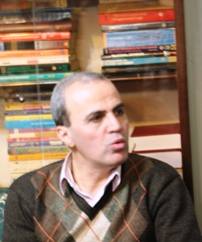

|
|

بیماری پدر و دوری از وی، بیماری محبوبه را تشدید می کند / دیدار با خانواده محبوبه کرمی
پنج شنبه24 آذر 1390
تا قانون خانواده برابر: روز دوشنبه 21 آذرماه، عده ای از فعالان جنبش زنان برای دیدار با خانواده محبوبه کرمی به منزل وی رفتند. پدر محبوبه کرمی بیمار است و در بخش مراقبت های ویژه بیمارستان بستری است.
برادر وی درباره وضعیت پدرشان توضیح داد: ایشان بیماری انسداد روده داشتند که بعد از عمل جراحی در بخش مراقبت های ویژه دچار مشکل تنفسی شدند و هنوز در این بخش بستری هستند.
وی درباره وضعیت روحی و جسمی محبوبه گفت: وضعیت جسمی محبوبه به واسطه مصرف داروها کمی بهتر شده اما بخاطر بیماری افسردگی هنوز نیاز به درمان دارد. یکشنبه در روز  ملاقات حال محبوبه پس از مدت ها خوب بود و به سختی توانستم خبر بستری شدن پدرم را بدهم. وقتی خبر را شنید با اینکه به او نگفتم که پدرم هنوز در آی سی یو بستری است، به شدت ناراحت شد که طبیعی هم بود.
از طرف دیگر، محیط نامناسب بند زنان اوین نیز بیماری روحی وی را تشدید می کند. به گفته کرمی «امکانات بند زنان هنوز تغییر چندانی نکرده». هواخوری زندان خیلی کوچک و حدود 9 یا 10 متر است. این کوچکی فضا که زندانیان سیاسی زن به آن معترضند، کمترین اجازه را به زندانیان برای هرگونه تحرک و ورزش تفریحیِ دست جمعی می دهد. بهداری اوین پزشک زنان ندارد، در حالی که با وجود بهداشت پایین زندان، زندانیان زن بیش از همه به پزشک زنان نیاز پیدا می کنند. بهداشت بند تا حدی پایین است که موش در آن وجود دارد و مسئولان هنوز نتوانسته اند آنها را بگیرند. زندانیان سیاسی زن نمی توانند بطور مستقیم از بوفه زندان خرید کنند. آنها باید کالاهایشان را سفارش دهند تا بعد از چند هفته و به طور نامنظم بتوانند تعدادی از آنها را دریافت کنند. دوربین های نصب شده در بند نیز تمام حرکات زندانیان زن را زیر نظر دارد در حالی که برای آنها مشخص نیست که آیا این تصاویر ضبط می شود و توسط چه کسانی بازبینی می شود. محرومیت از تلفن نیز همچنان در این بند ادامه دارد که فشار روانی زیادی به آنها زندانیان سیاسی زن می کند.
زندانیان حق استفاده از کتابخانه را ندارند و کتابهایی که خانواده ها به آنها می رسانند بعد از بررسی مسئولان به دستشان می رسد. گاهی حتی از کتابهای منتشر شده در بازار نیز منع می شوند. با وجود هواخوری نامناسب و وضعیت گفته شده عملا زندانیان زن، تفریح درستی ندارند.
محسن کرمی افزود: برای بیماری کم خونی محبوبه، پزشک قانونی با عدم تحمل کیفر موافقت کرد حتی به ما گفتند کمیسیون پزشکی نیز موافقت کرده اما چند روز پیش در دادستانی به محبوبه رای کمیسیون ابلاغ شد که با عدم تحمل کیفر موافقت نکرده اند. محبوبه همچنان برای درمان به مرخصی نیاز دارد. دیروز به خاطر وضعیت پدر هم درخواست مرخصی داده است.
وی درباره ملاقات خانواده ها با زندانیان نیز گفت: به تازگی یکی از زندانیان بند مالی اوین در هنگام ملاقات حضوری فرار کرد و به همین دلیل ملاقات های حضوری سخت تر شد. اکنون قبل و بعد از ملاقات از زندانی و ملاقات کننده ها عکس و اسکن اثر انگشت می گیرند که معطلی زیادی دارد.
محبوبه کرمی از تاریخ 25 اردیبهشت برای گذراندن دوره حبس سه ساله خود در زندان اوین بازداشت است. وی به تازگی نامه ای به پدر خود نوشته که شرح دلتنگی هایش در بند زنان اوین است. بیش از یک هفته از بستری شدن پدر محبوبه کرمی در بیمارستان می گذرد وضعیت مناسبی ندارد. محبوبه کرمی از بیماری افسردگی رنج می برد و بیم آن می رود که بیماری پدر و دوری از وی در چنین شرایطی، بیماری اش را تشدید کند.